AnyPortrait > マニュアル > キャラクターの衣装を交換
キャラクターの衣装を交換
1.1.0
ゲームで「アイテムを獲得して、キャラクターの服や装備を変えること」は、おそらく基本的な機能である。
キャラクターの衣装を交換する機能を実装することは、様々な方法があります。
すべての服や装備のアニメーションをいちいち作成交換する方法もあり、簡単に色やテクスチャだけ変える方法もあります。
このページでは、AnyPortraitを利用して、キャラクターの衣装を「テクスチャの交換」を利用して交換する方法を説明します。
また、「ソケット（Socket）」を利用して、武器と盾を付着する機能をスクリプトに実装する内容も説明します。
一貫性のある構成の方法で作られたAtlas準備
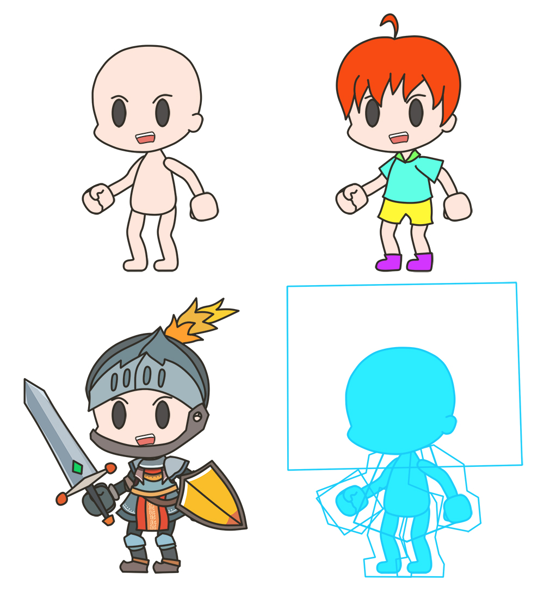
キャラクターの衣装を交換する例のために上記のような画像を用意しました。
最初の図は、キャラクターがどのような服も着ない最も基本的な状態です。
第二映像のキャラクターは、カジュアルな服装をしており、オレンジ色のの短い髪を持っています。
第三図のキャラクターは、鋼された装置の記事服装をしており、剣と盾を持っています。
上記のようにキャラクターが衣装を交換して、様々な外形を持つように作られてみましょう。
このページでは、それぞれのメッシュのテクスチャをリアルタイムに変更する機能を実装する方法を説明します。
この方法は簡単ですが、次の注意事項があります。
- すべてのテクスチャのAtlasは同じように構成する必要があります。
- 「PSDファイルの読み込み」機能は、Atlasを自動的に生成するので、ここでは利用できません。
- 変更される画像の大きさと形状が異なるため、メッシュを作成するときにはかなり大きくする必要があります。
- 同じ骨と物理材質を共有していない衣装がある場合は事前にそれに合う他のメッシュを作成します。
- 後に追加される様々な衣装たちのために骨を事前に追加する必要があります。
- テクスチャを交換すると、「Drawcall」が増加することができます。
上記のような注意事項に沿って第四図のように「基本のキャラクター」を作成しました。
「基本のキャラクター」は「基本的な見た目」と「後に交換することができる衣装のイメージのサイズ」を一緒に表示たのが特徴です。


上記の注意事項に基づいて完成された4つのキャラクターのテクスチャAtlasです。
頭（Head）と髪（Hair）の領域を分離し、胴体、腕と脚をそれぞれ分離しました。
剣と盾はAtlasに含めないんでした。
「基本のキャラクター」のテクスチャを利用して,メッシュを作成
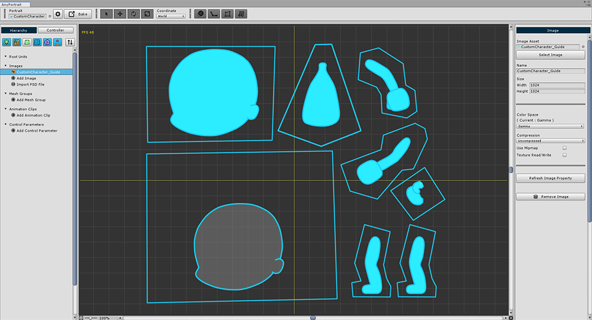
AnyPortraitエディタを開いて、新しいキャラクターを作成します。
用意されたテクスチャの中で、「基本のキャラクター」のテクスチャを選択して、画像に追加します。
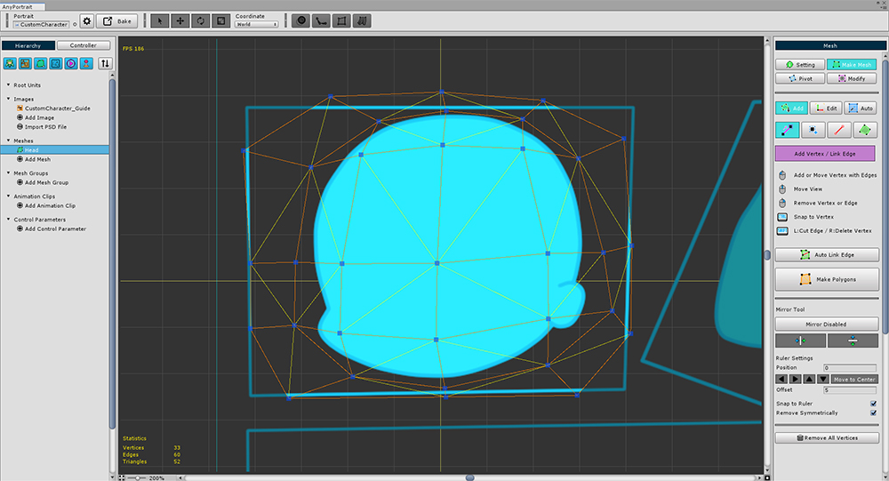
メッシュを一つずつ作成します。
一般的なメッシュ作成のプロセスとは異なり、ここでは、次のようにメッシュを作成します。

一般的には「赤の領域（Basic Area）」のように、画像の形に合わせてメッシュを作成します。
ただし、変更される画像がサイズをわからないので、「緑の領域（Maximum Area）」のように適当に大きくします。
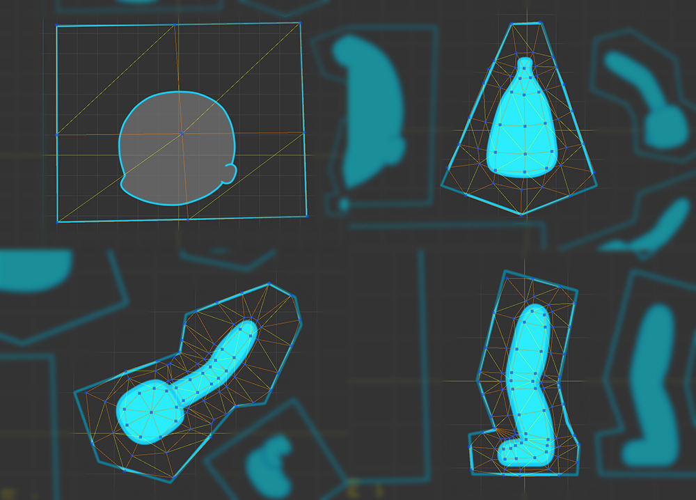
同じように、他のメッシュも作成します。
関節のある部位で頂点がたくさん追加されたことを見ることができます。
頂点が、多くの場合、画像や動きに応じて、頂点の「Z-Depth」値を変更する必要があります。（関連ページ）
「基本のキャラクター」作成

(1) メッシュグループを作成します。
(2) メッシュグループの名前を決め、ルートユニットに設定します。
(3) 「+」ボタンをクリックし、(4) メッシュを追加します。

(1) 「Edit Default Transform」ボタンを押します。
(2) それぞれのメッシュの位置を変更します。
(3) メッシュの順序を適切に変更します。
すべての作業が終了したら、再び「Edit Default Transform」ボタン（または「Editing..」ボタン）を押して編集を終了します。

「基本のキャラクター」がよく作られたかテストすることができます。
(1) 画像を選択します。
(2) 「Select Image」ボタンを押します。
(3) 「基本のテクスチャ」以外のキャラクターのテクスチャを選択します。
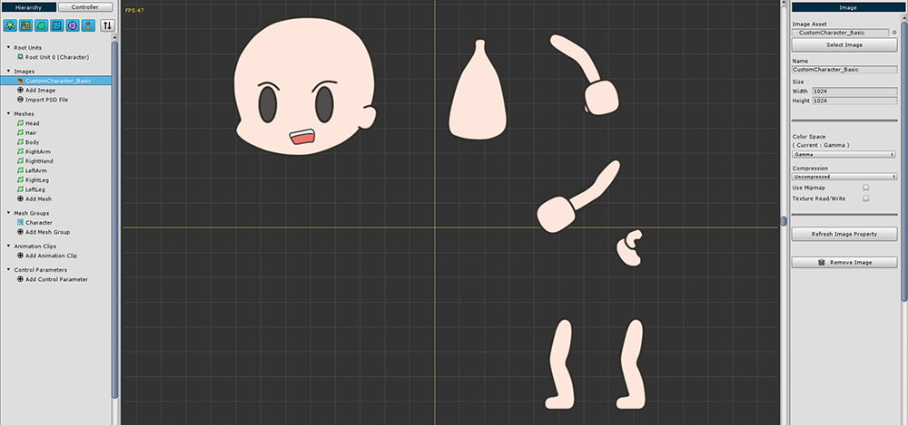
現在の画像が基本のキャラクターではなく、ゲームの開始キャラクターテクスチャに変更されました。
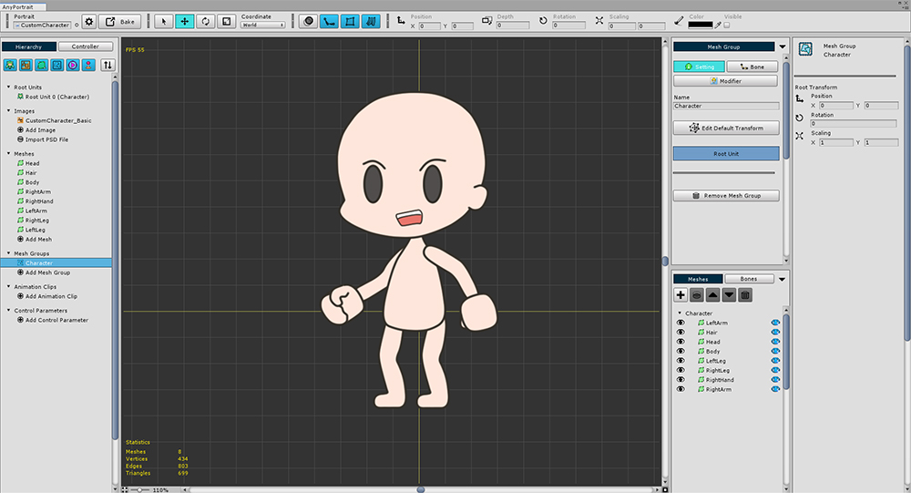
メッシュグループを再度選択すると、テクスチャを交換する過程でキャラクターの外形を変えることができることがわかります。
Atlasは、同じ方法で構成されている場合は、上記のようにテクスチャのみを交換して見た目を変更することができます。
このプロセスは、テストのためのものなので、元のテクスチャに変更します。
（後に、このゲームの開始のためのキャラクターのテクスチャを使用しますが、現在の段階では、基本のテクスチャを使用することをお勧めします。）
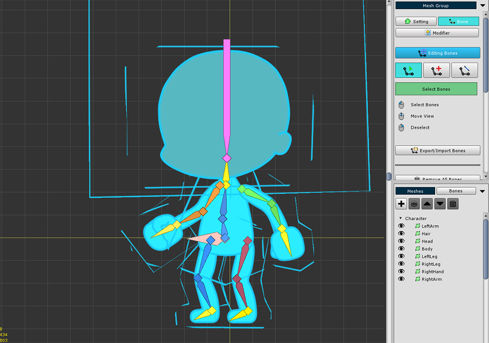
骨を追加します。
交換される衣装の形を考え、この段階では、あらかじめ骨を追加することをお勧めします。

(1) 「Modifier」タブを選択し、「Add Modifier」ボタンを押します。
(2) 「Rigging」モディファイヤを選択して追加します。

「Rigging」モディファイヤを選択した状態で、すべてのメッシュをそれぞれ選択して骨の重みを設定します。
画像に見えるものよりメッシュの大きさがより大きいので、注意して重みを設定します。

「Rigging」モディファイヤの作業がすべて終わったら、次は骨を利用して、アニメーションを作成する番です。
(1) 「Add Modifier」ボタンを押します。
(2) 「Transform（Animation）」モディファイヤを選択して追加します。

(1) 新しい「アニメーションクリップ」を作成します。
(2) アニメの名前と対象となるメッシュグループを設定して、「Add Timeline」ボタンを押します。
(3) 「Transform（Animation）」モディファイヤをタイムラインに登録します。
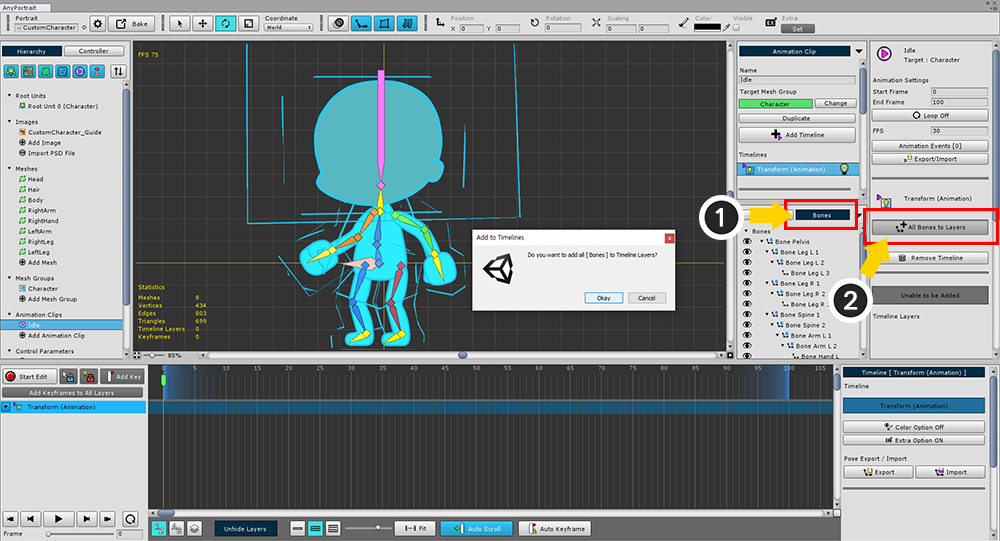
(1) 「Bones」タブを選択します。
(2) 「All Bones to Layers」ボタンを押して、すべての骨を「タイムラインのレイヤー」に登録します。
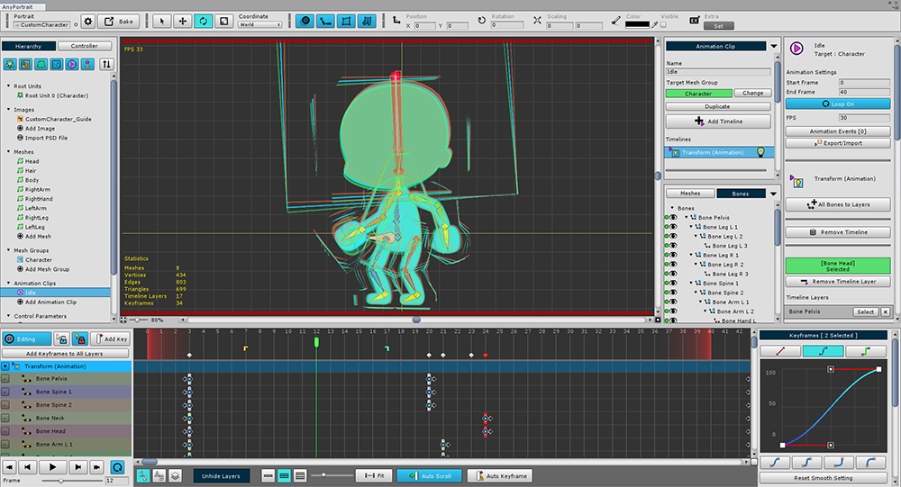
骨を一つずつ選択して、キャラクターのアニメーションを作成します。
（必ず骨のみアニメーションを作成する必要はありません。自由にアニメーションを作成してください。）

完成されたキャラクタアニメーションをUnity Sceneに移す番です。
(1) 「ルートユニット」を選択します。
(2) 基本となる「アニメクリップ」を選択します。
(3) 「Auto Play」の設定を「ON」に変更します。
(4) 「Bake」ボタンを押して「Bakeダイアログ」を開きます。
(5) Bakeダイアログの「Bake」ボタンを押してAnyPortraitエディタを終了します。

Unityでゲームを実行すると、キャラクターのアニメーションが再生されるのを見ることができます。
キャラクターの衣装を変えるスクリプトを作成
次のステップは、スクリプトを作成して、キャラクターの衣装を交換する機能を実装してみることです。
キーボード入力を利用して、「服を着ていない状態」、「カジュアルな服を着た状態」、「記事装備を着用した状態」に移行することを実装してみます。
特に、頭（Hair）の部分とそれ以外のメッシュを区分して衣装を交換するコードを作成してみましょう。
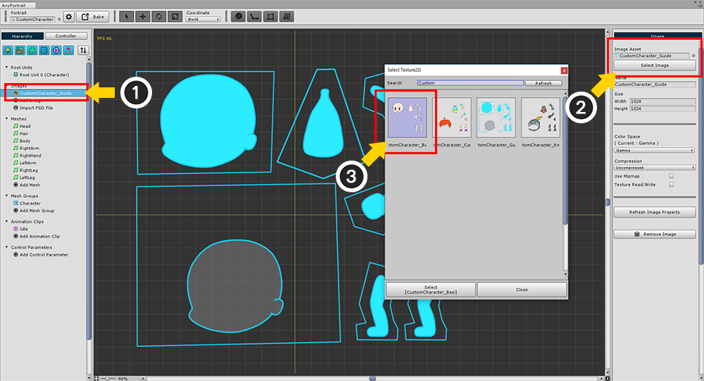
これで、画像をゲームから適用されるキャラクターのテクスチャに変更してみましょう。
(1) 画像を選択し、(2) 「Select Image」ボタンを押して、「ゲーム開始のキャラクターテクスチャ」に変更します。

テクスチャが変更されました。

再びBakeをしてUnity Sceneに適用します。
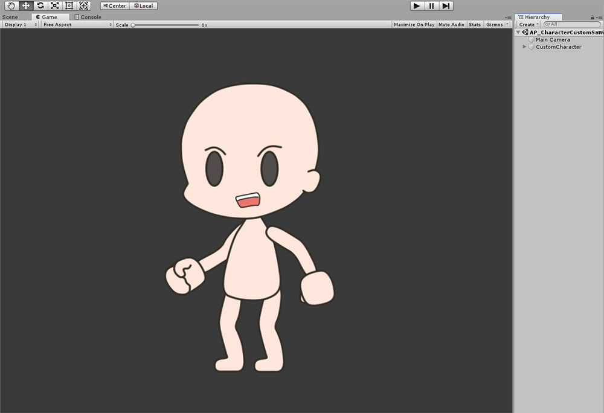
「服を着ていない状態」のキャラクターに変更されました。
今、新しいC＃スクリプトを以下のように作成します。
public class CustomSample : MonoBehaviour
{
// 対象となるapPortrait
public apPortrait portrait;
// 3種のキャラクターテクスチャ
public Texture2D image_Basic;
public Texture2D image_Casual;
public Texture2D image_Knight;
void Start () { }
void Update ()
{
// Q、A、Zキーを押すと、「Hair」メッシュのテクスチャが変更されます。
if ( Input.GetKeyDown(KeyCode.Q) )
{
portrait.SetMeshImage( "Hair", image_Basic );
}
if ( Input.GetKeyDown(KeyCode.A) )
{
portrait.SetMeshImage( "Hair", image_Casual );
}
if ( Input.GetKeyDown(KeyCode.Z) )
{
portrait.SetMeshImage( "Hair", image_Knight );
}
// W、S、Xキーを押すと、「Hair」、「Head」以外のメッシュのテクスチャが変更されます。
if ( Input.GetKeyDown(KeyCode.W) )
{
portrait.SetMeshImage( "Body", image_Basic );
portrait.SetMeshImage( "LeftArm", image_Basic );
portrait.SetMeshImage( "RightArm", image_Basic );
portrait.SetMeshImage( "RightHand", image_Basic );
portrait.SetMeshImage( "LeftLeg", image_Basic );
portrait.SetMeshImage( "RightLeg", image_Basic );
}
if ( Input.GetKeyDown(KeyCode.S) )
{
portrait.SetMeshImage( "Body", image_Casual) ;
portrait.SetMeshImage( "LeftArm", image_Casual );
portrait.SetMeshImage( "RightArm", image_Casual );
portrait.SetMeshImage( "RightHand", image_Casual );
portrait.SetMeshImage( "LeftLeg", image_Casual );
portrait.SetMeshImage( "RightLeg", image_Casual );
}
if ( Input.GetKeyDown(KeyCode.X) )
{
portrait.SetMeshImage( "Body", image_Knight );
portrait.SetMeshImage( "LeftArm", image_Knight );
portrait.SetMeshImage( "RightArm", image_Knight );
portrait.SetMeshImage( "RightHand", image_Knight );
portrait.SetMeshImage( "LeftLeg", image_Knight );
portrait.SetMeshImage( "RightLeg", image_Knight );
}
}
}
apPortraitの「SetMeshImage」関数を利用した簡単なコードです。（関連ページ）
テクスチャを変更しようとするメッシュの名前とTexture2Dを入力して、キャラクターの外形を変更することができます。

新しいGameObjectを作成作成したスクリプトをComponentに追加します。
Publicメンバ変数（1つのapPortraitと3つのTexture2D）をそれぞれ接続します。
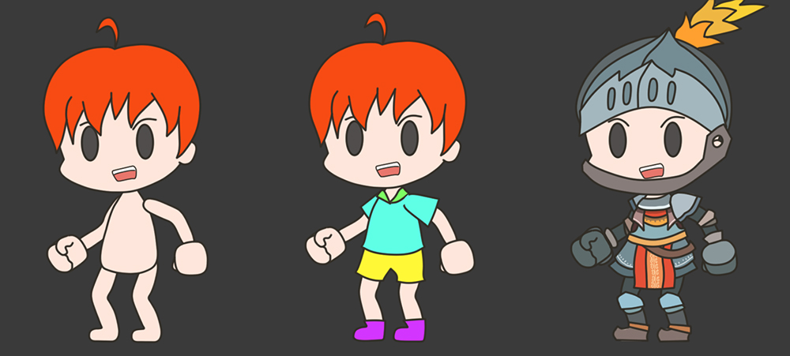
ゲームを実行すると、キー入力に応じてキャラクターの服や髪が変わるのを見ることができます。
「ソケット（Socket）」を利用して機器を交換
キャラクターが使用するアイテムの中に形が変わらなくて、骨の動きに影響を受けないものがあります。
剣、盾、銃のような武器が、そのような例です。
また、頭の上にのせる帽子、小さな装飾、メガネなども大きく形が変わらないアイテムです。
これらの種類のアイテムを装着しようとするときは、「ソケット（Socket）」を利用することが、より効果的です。
ソケットの詳細については、「関連ページ」でご覧いただけます。
このページは、キャラクターの右手に剣を装備して、左腕に盾を装着する過程を説明します。

剣と盾の「Texture2D」と「Material」を用意して、「Quadメッシュ」を使用して、別の 「GameObject」をそれぞれ作成します。

ところが、ここで一つの問題があります。
剣、盾の画像の中心が「キャラクターに装着されている部分」がありません。
そのため、「キャラクターに装着がされている基準点」を作成します。
(1) 新しい「GameObject」をそれぞれ作成します。ここで「Weapon_Shield」と「Weapon_Sword」と名付けました。
そして、既存の剣、盾メッシュがあるGameObjectを「新しいGameObjectの子」として指定します。
（逆に作らないように注意して下さい。）
(2) 親GameObjectの位置が「基準点」となるように、それぞれのメッシュの位置を変更します。

(1) AnyPortraitエディタを開いて、「メッシュグループ」を選択します。
(2) 剣と盾が装着される位置に骨を追加します。
骨を右手と左腕にそれぞれ追加し名前はそれぞれ「Bone Weapon R」と「Bone Weapon L」です。
(3) 「Socket Disabled」ボタンを押して、ソケットを有効にします。
そして「Bake」を再します。
ここで、次のコードを既存のに作成したスクリプトに追加で作成します。
public class CustomSample : MonoBehaviour
{
// 対象となるapPortrait
public apPortrait portrait;
// 3種のキャラクターテクスチャ
public Texture2D image_Basic;
public Texture2D image_Casual;
public Texture2D image_Knight;
// <追加>剣と盾の親Transformをメンバーとして追加します。
public Transform sword;
public Transform shield;
void Update ()
{
（省略...）
// <追加> Eキーを押すと、剣と盾を装備します。
if ( Input.GetKeyDown(KeyCode.E) )
{
// 二つの骨のソケットを取得します。
Transform socketR = portrait.GetBoneSocket( "Bone Weapon R" );
Transform socketL = portrait.GetBoneSocket( "Bone Weapon L" );
// 「剣（Weapon_Sword）」を右手の骨のソケットの子として登録します。
sword.parent = socketR;
sword.localPosition = Vector3.zero;
sword.localRotation = Quaternion.identity;
// 「盾（Weapon_Shield）」を左腕の骨のソケットの子として登録します。
shield.parent = socketL;
shield.localPosition = Vector3.zero;
shield.localRotation = Quaternion.identity;
}
// <追加> Rキーを押すと、剣と盾の装備を解除します。
if ( Input.GetKeyDown(KeyCode.R) )
{
sword.parent = null;
sword.localPosition = new Vector3(5, 0, 0);
sword.localRotation = Quaternion.identity;
shield.parent = null;
shield.localPosition = new Vector3(3, 0, 0);
shield.localRotation = Quaternion.identity;
}
}
}
スクリプトを作成した後、「sword」には「Weapon_Sword」を割り当て、「shield」に「Weapon_Shield」を割り当てます。
ゲームを実行してみます。

キーを入力すると、キャラクターの右手と左腕に剣と盾が装着されることを見ることができます。

さて、装着された剣と盾がキャラクターよりも常に後ろにレンダリングされることを見ることができます。
Z軸の位置値を適切に変更して、アイテムが適切な位置で装着されるようにする必要があります。

再びAnyPortraitエディタを開きます。
(1) 「Bake」ボタンを押して「Bakeダイアログ」を開きます。
(2) 「Z Per Depth」の値を増加させます。ここで10を入力しました。
(3) 「Bake」ボタンを押してUnity Sceneに適用します。
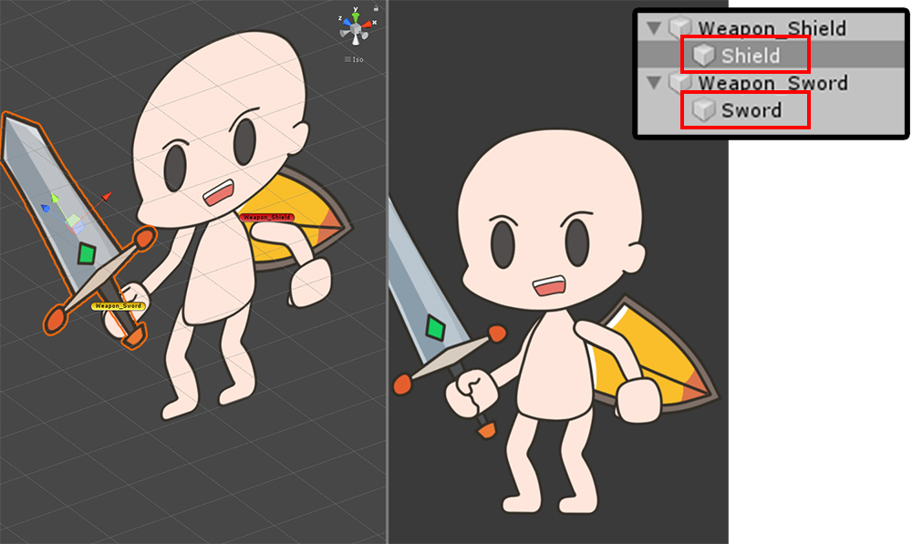
今Unity Sceneで、それぞれのメッシュがZ軸に少し遠く離れて配置されたことを見ることができます。
しかしながら、剣と盾を位置させると、まだキャラクターメッシュよりも常に後ろになります。
剣と盾のメッシュがあるGameObjectを選択します。
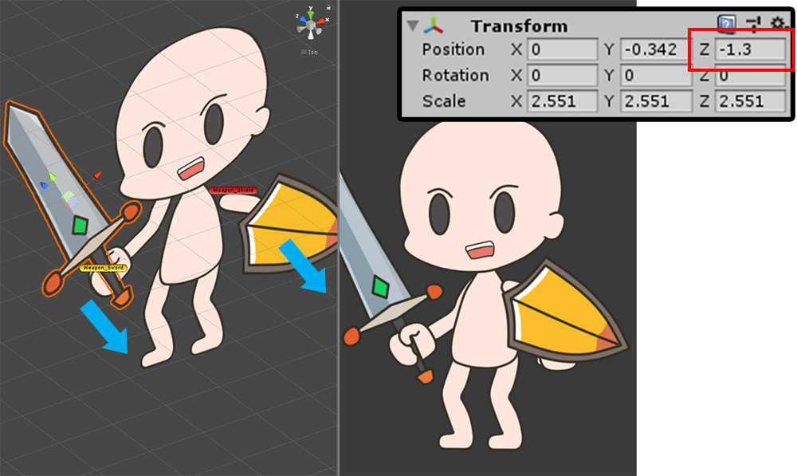
適切な順序でレンダリングになるようにZ軸に移動します。
おそらくローカル座標のZ軸の値が負の値を持つことになります。
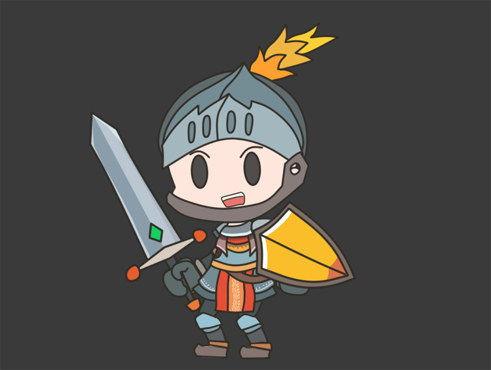
ゲームを実行すると、キャラクターの衣装を変えることはもちろんのこと、剣と盾を装備して解除することが可能になりました。